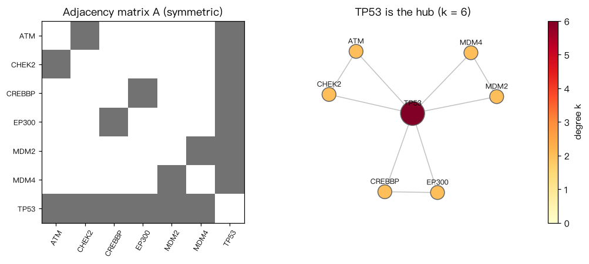
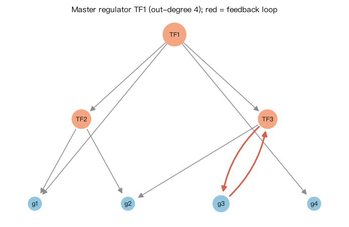
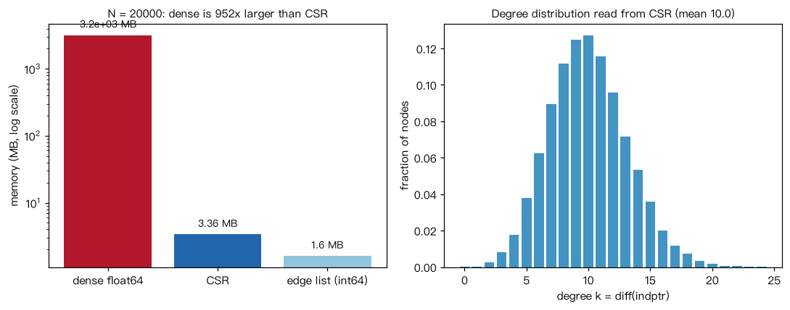
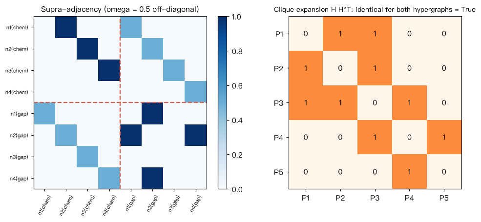
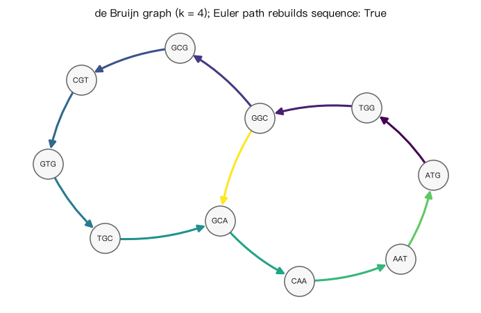

复杂系统与网络的数学表示
把由大量相互作用组分构成的生物医学系统抽象为图，并用邻接矩阵、关联矩阵、拉普拉斯矩阵和边列表等数学对象表示与计算。
细胞里的上万种蛋白质、大脑里的数百个脑区、一位抑郁症患者身上相互牵连的十几个症状——这些系统的共同点是：单看每个组分都说不清系统的行为，组分之间的相互作用才是关键。网络（network）就是描述相互作用的语言。
本专题处理网络科学最基础的问题，可分为四组：
- 复杂系统与网络科学：什么是复杂系统，网络科学从哪里来、为什么在 20 世纪末到 21 世纪初兴起，技术、信息、社会、生物网络之间有何异同；
- 图的种类：有向、加权、符号、二分与多部网络，以及超出“一对节点一条边”的多层网络、时间网络与超图；
- 数学与计算表示：邻接矩阵、关联矩阵、度矩阵与拉普拉斯矩阵，边列表、邻接表与稀疏矩阵，GraphML、GML 等文件格式，以及从七桥问题出发的几条图论基本定理和可手算的算例；
- 生物医学网络：分子、细胞、脑、症状、疾病与药物网络中节点与边分别是什么、来自什么数据、边具有什么性质，以及“网络思维”为何能帮助理解多基因复杂疾病。
本专题只负责“把系统写成图”这一步。在此基础上，网络结构指标与随机图定义度分布、路径、聚集系数等结构指标，度相关性与网络结构的高阶统计讨论节点之间“谁和谁相连”的统计规律，小世界与无标度网络模型和社团结构与社区发现讨论真实网络的统计规律与组织方式，网络构建与统计验证则专门讨论从原始测量到网络的构建选择与检验。
Contents知识页面
VIDEO讲解视频
文字稿
这个故事发生在十八世纪的哥尼斯堡，一座有很多桥的城市。 我们把地图画简单一点。一条河，把城市分成了四块陆地；七座桥，把它们连在一起。 当地人有个消遣：每座桥恰好走一次，把全城走遍。 我们来试一条路线。你看，走着走着，总有一座桥被落下——就是这座红色的桥。 要弄清楚的是：是路线没找对，还是这件事根本做不到。 这一期分三部分来讲。 第一部分，欧拉怎样把地图变成网络，以及网络里的边有哪些种类。 第二部分，怎样用矩阵来表示网络，并且用矩阵做计算。 第三部分，生物医学里常见的二分网络，以及真实网络的稀疏性。 先看第一部分。欧拉的做法，是把地图上的细节统统扔掉。 每块陆地缩成一个点，叫作节点；每座桥变成一条线，叫作边。 陆地多大、桥有多长，都不重要了。剩下的，只有谁和谁相连。 现在数一数，每个点连着几条线。这个数，叫作节点的度，也就是它的连接数。 四个点的度，分别是五、三、三、三。 一笔走下去，每路过一个点，都要一进一出，也就是成对地用掉两条线。 所以，除了起点和终点，其余点的度都必须是偶数。也就是说，度是奇数的点，最多只能有两个。 七桥图里，四个点的度全是奇数。所以答案是：不可能。 这是图论的起点，也是网络思维的核心：结构本身，就限制了系统能做什么。 下面看，节点和边能描述什么。这张小图有四个节点、四条边，它可以是四个相互结合的蛋白质。 也可以是四个脑区，或者一位患者身上，相互牵连的四个症状。 比如脑区之间的连接，可以用弥散磁共振，追踪大脑里的白质纤维束来测量。 边也有不同的性质。蛋白质之间的结合是相互的，用没有方向的线表示，叫无向边。 转录因子调控靶基因，作用有方向，用带箭头的线表示，叫有向边。 脑区之间的功能连接有强有弱，可以给每条边一个数值，叫加权边。 调控有激活，也有抑制，就给边带上正号或负号，叫符号边。 选什么做节点、什么做边，其实就是在选你要回答的科学问题。 下面进入第二部分。要让计算机处理网络，最常用的办法，是写成一张表，叫邻接矩阵。 左边是刚才的小网络，节点编号一到四。右边这张表，行和列都对应这四个节点。 规则很简单：两个节点之间有边，对应的格子就填一；没有边，就填零。 比如一号和二号相连。所以第一行第二列是一，第二行第一列也是一。 无向网络的邻接矩阵总是对称的。沿着这条对角线翻折，两边完全一样。 把一行的数加起来，就是这个节点的度。三号连了三条边，它那一行的和就是三。 所有节点的度加起来是八，正好是边数四的两倍。因为每条边有两个端点，被数了两次。 邻接矩阵还能做运算。把它和自己相乘，就得到右边这张新表。 新表里的每个数，表示两个节点之间，走两步的路线一共有几条。 比如一号到四号。走两步，只能经过三号，只有这一条路，所以这个格子是一。 也就是说，它数的是两个节点的共同邻居。共同邻居的数目，是预测新连接最简单的线索。 再乘一次，得到走三步的路线数。注意对角线上的这四个数。 把它们加起来，再除以六，就是网络里三角形的个数。这里是一个，就是一、二、三号组成的三角形。 为什么除以六：每个三角形有三个顶点，从每个顶点出发，可以顺着绕一圈，也可以倒着绕一圈，所以一共被数了六次。 再介绍一个重要的矩阵。先把每个节点的度，放在对角线上，得到一张表，叫度矩阵。 用度矩阵减去邻接矩阵，就是拉普拉斯矩阵。 看公式：左边这一项是度矩阵，右边这一项是邻接矩阵。所以对角线上是每个节点的度，有边的位置是负一。 这样一来，拉普拉斯矩阵每一行加起来，都正好是零。 它的一个用处是描述扩散。想象每个节点上有一些热量，热量沿着边，从高处流向低处。这个扩散过程，就由拉普拉斯矩阵控制。 这个思路已经用在医学里。有研究用这样的扩散模型，描述痴呆中的病理沿白质网络扩散，预测的萎缩分布，和患者的影像有显著对应。 拉普拉斯矩阵还有一组特殊的数，叫特征值。这里不讲怎么算，只看它能告诉我们什么。这张小图的特征值是零、一、三、四。 规律是：零出现几次，网络就分成几块。这里零只出现一次，说明整张图是连在一起的。 现在切断三号和四号之间的边。网络分成了两块，零就出现了两次。 最后是第三部分。生物医学里有一类很常见的网络：节点分成两类，边只连接不同类的节点，叫二分网络。 比如药物和靶点。左边是三种药物，右边是四个靶点。每条线，表示这种药作用于这个靶点。 如果两种药物作用于同一个靶点，就在它们之间连一条边，这叫投影。你看，药一和药二共用了靶点二，所以它们相连。 人类疾病网络就是这样来的。2007年的一项研究，把一千二百八十四种疾病，和一千七百七十七个致病基因，连成一张二分网络。 再投影到疾病这一侧：两种疾病只要有共同的致病基因，就连一条边。 但是，投影会丢掉信息。左边，是三种药物共用一个靶点；右边，是三种药物两两各共用一个不同的靶点。 两种情况完全不同，投影之后，却是同一个三角形。所以能直接分析二分网络时，最好不要急着投影。 第三部分的另一个问题，是网络的规模。设想一个有两万个蛋白质的网络，它的邻接矩阵，一共有四亿个格子。 可如果只有二十万条边，填了一的格子只占大约千分之一，其余全是零。这样的网络，叫稀疏网络。 真实网络几乎都是稀疏的。所以大网络通常存成边列表：每一行只记一条边，写下它两端的节点。 看一个例子：一个七十万名演员的合作网络，存成稠密矩阵，要大约四太字节；存成边列表，只要几百兆。 好，我们来总结一下。 第一，网络把系统抽象成节点和边，答案只取决于谁和谁相连。 第二，邻接矩阵和拉普拉斯矩阵，让我们能用代数，算出度、路线数和连通性这些性质。 第三，节点和边怎么选，决定了这张网络能回答什么问题。 这个专题的知识页面里，有画面上的这个交互演示。依次点击两个节点，就能添加或删除它们之间的边，邻接矩阵和度序列会跟着变化。
INTERACTIVE交互可视化
CODE计算实现
11 个完整可运行的 Python 示例，每个都给出代码、输出图和解读；可在浏览器中直接运行，或下载 Jupyter Notebook · Python 脚本。
 哥尼斯堡七桥问题与欧拉路径
哥尼斯堡七桥问题与欧拉路径
从边列表构造邻接矩阵
有向网络的入度与出度 二分网络的投影——药物–靶点到药物–药物
二分网络的投影——药物–靶点到药物–药物 邻接矩阵的乘方——游走、共同邻居与三角形
邻接矩阵的乘方——游走、共同邻居与三角形 关联矩阵、度矩阵与拉普拉斯矩阵
关联矩阵、度矩阵与拉普拉斯矩阵
稀疏存储——边列表、CSR 与稠密矩阵的内存比较边列表文件内容: TP53 MDM2 0.999 TP53 CHEK2 0.98 GraphML 文件前 6 行: <?xml version='1.0' encoding='utf-8'?> <graphml xmlns="http://graphml.graphdrawing.org/xmlns" xmlns:xsi="http://www.w3.org/2001/XMLSchema-instance" xsi:schemaLocation="http://graphml.graphdrawing.org/xmlns http://graphml.graphdrawing.org/xmlns/1.0/graphml.xsd"> <key id="d1" for="edge" attr.name="score" attr.type="double" /> <key id="d0" for="node" attr.name="kind" attr.type="string" />网络文件格式——边列表、GML 与 GraphML 的读写差异
 符号网络与结构平衡
符号网络与结构平衡
多层网络的超邻接矩阵与超图的表示
用欧拉路径做 de Bruijn 图序列组装，并核对几条图论基本定理Papers论文精读
复杂网络的结构与功能
The structure and function of complex networks
Newman MEJ
网络科学第一个十年的系统综述：真实网络的统计特征、随机图与增长模型、网络上的渗流与传播。
人类疾病网络
The human disease network
Goh K-I, Cusick ME, Valle D, Childs B, Vidal M, Barabási A-L
用 OMIM 疾病–基因关联构建疾病网络，发现疾病共享遗传根源、按类别聚集，多数遗传病基因位于网络外围。
References核心文献
Strogatz 2001：Exploring complex networks
- 出处：Nature 410: 268–276。DOI：10.1038/35065725
- 背景：小世界和无标度模型刚提出两三年，网络研究在物理、生物、社会科学中同时升温，需要一篇面向各领域读者的导论。
- 核心观点：网络研究的难点来自“结构复杂性、网络演化、连接多样性、动力学复杂性、节点多样性”以及它们的相互作用；文章梳理了规则网络、随机网络、小世界和无标度网络，并讨论网络上的同步等动力学问题。
- 阅读提示：先读引言中关于“复杂性的几种来源”的论述，它几乎概括了网络科学的主要问题；动力学部分可与网络上的传播与免疫、同步与协同动力学对照阅读。
- 思考题：作者列出的几种复杂性，在你熟悉的一个生物网络（例如脑网络或基因调控网络）中分别体现在哪里？
Newman 2003：The structure and function of complex networks
- 出处：SIAM Review 45: 167–256。DOI：10.1137/S003614450342480。论文精读：Newman 2003
- 背景：网络研究在多个学科分头展开，术语与方法各不相同。
- 核心观点：按技术、信息、社会、生物四类整理真实网络的数据与统计性质，统一介绍度分布、聚集、度相关、社团等概念与随机图、小世界、优先连接等模型，以及网络上的过程。
- 阅读提示：第 2 节对四类网络的数据来源与局限的讨论，与本专题网络的类别直接对应。
- 思考题：文中的四类网络里，哪一类的数据最容易受到采样偏倚的影响？生物网络属于哪种情况？
Barabási & Oltvai 2004：Network biology: understanding the cell’s functional organization
- 出处：Nature Reviews Genetics 5: 101–113。DOI：10.1038/nrg1272
- 背景：高通量技术产生了大量分子相互作用数据，生物学家需要一套语言来描述细胞层面的网络结构。
- 核心观点：系统介绍度、路径、聚集系数、度分布、模块、基序等概念，并以代谢网络、PPI 网络、调控网络为例，提出细胞网络具有“基序 → 模块 → 大规模网络”的层次结构。
- 阅读提示：文中的方框（Box）对图论概念有清晰的图示，可作为网络基础概念的参考卡片；一些关于“无标度普遍性”的论断在后来受到质疑（见小世界与无标度网络模型）。
- 思考题：文章认为网络的拓扑特征与生物功能相关。请举一个你能想到的例子，并说明需要什么数据来检验它。
Barabási, Gulbahce & Loscalzo 2011：Network medicine: a network-based approach to human disease
- 出处：Nature Reviews Genetics 12: 56–68。DOI：10.1038/nrg2918。论文精读：Barabási 2011
- 背景：全基因组关联研究发现了大量疾病相关位点，但单个位点效应小，难以解释疾病机制。
- 核心观点：提出网络医学的基本假设——疾病基因在相互作用组中形成局部模块，疾病模块之间的重叠解释共病，网络位置可用于疾病基因发现、药物靶点和生物标志物研究。
- 阅读提示：重点看“疾病模块”的几个假设以及作者讨论的数据不完整问题；这些内容在生物分子网络与拓扑特征和疾病模块、网络邻近度与药物重定位中还会深入展开。
- 思考题：如果相互作用组只测到了真实相互作用的一部分，疾病模块分析的结论会受到怎样的影响？
Kivelä 等 2014：Multilayer networks
- 出处：Journal of Complex Networks 2: 203–271。DOI：10.1093/comnet/cnu016
- 背景：多重网络、相互依存网络、时间网络等概念在不同文献中各自命名，缺少统一的数学框架。
- 核心观点：提出一般的多层网络定义（节点–层、层的“方面”），用张量与超邻接矩阵统一表示，并比较了把多层结构化约为单层网络的多种方式及其信息损失。
- 阅读提示：先读定义部分与术语对照表，再看“化约为单层网络”的讨论，可与本专题多层网络、时间网络与超图对照。
- 思考题：你的数据中如果有两种关系（如结构连接与功能连接），把它们放在一个多层网络里比分别分析多得到什么？
Battiston 等 2020：Networks beyond pairwise interactions: structure and dynamics
- 出处：Physics Reports 874: 1–92。DOI：10.1016/j.physrep.2020.05.004
- 背景：许多系统中的相互作用发生在三个及以上组分之间，成对网络无法完整描述。
- 核心观点：系统比较超图、单纯复形等高阶表示，整理高阶结构的度量、模型与其上的扩散、同步、传播动力学，并讨论高阶相互作用何时改变动力学的定性行为。
- 阅读提示：先读高阶表示的比较部分，再按兴趣选读动力学章节；生物学例子散见于各节。
- 思考题：在你熟悉的生物系统中，哪种“相互作用”本质上是多体的？现有数据能否把它与多个成对相互作用区分开？
其他引用文献
- White JG, Southgate E, Thomson JN, Brenner S (1986). The structure of the nervous system of the nematode Caenorhabditis elegans. Phil Trans R Soc Lond B 314: 1–340. DOI：10.1098/rstb.1986.0056
- Cartwright D, Harary F (1956). Structural balance: a generalization of Heider’s theory. Psychological Review 63: 277–293. DOI：10.1037/h0046049
- Shannon P 等 (2003). Cytoscape: a software environment for integrated models of biomolecular interaction networks. Genome Research 13: 2498–2504. DOI：10.1101/gr.1239303
- Sporns O, Tononi G, Kötter R (2005). The human connectome: a structural description of the human brain. PLoS Computational Biology 1: e42. DOI：10.1371/journal.pcbi.0010042
- Goh K-I 等 (2007). The human disease network. PNAS. DOI：10.1073/pnas.0701361104。论文精读：Goh 2007
- Azevedo FAC 等 (2009). Equal numbers of neuronal and nonneuronal cells make the human brain an isometrically scaled-up primate brain. J Comp Neurol 513: 532–541. DOI：10.1002/cne.21974
- Klamt S, Haus U-U, Theis F (2009). Hypergraphs and cellular networks. PLoS Computational Biology 5: e1000385. DOI：10.1371/journal.pcbi.1000385
- Holme P, Saramäki J (2012). Temporal networks. Physics Reports 519: 97–125. DOI：10.1016/j.physrep.2012.03.001
- Raj A, Kuceyeski A, Weiner M (2012). A network diffusion model of disease progression in dementia. Neuron 73: 1204–1215. DOI：10.1016/j.neuron.2011.12.040
- Boccaletti S 等 (2014). The structure and dynamics of multilayer networks. Physics Reports 544: 1–122. DOI：10.1016/j.physrep.2014.07.001
- Ziemann M, Eren Y, El-Osta A (2016). Gene name errors are widespread in the scientific literature. Genome Biology 17: 177. DOI：10.1186/s13059-016-1044-7
- Cowen L, Ideker T, Raphael BJ, Sharan R (2017). Network propagation: a universal amplifier of genetic associations. Nature Reviews Genetics 18: 551–562. DOI：10.1038/nrg.2017.38
- Luck K 等 (2020). A reference map of the human binary protein interactome. Nature 580: 402–408. DOI：10.1038/s41586-020-2188-x
Data & tools相关数据与软件
Further延伸资源
| 类型 | 资源 | 说明 |
|---|---|---|
| 教材 | Barabási《Network Science》Ch. 1 Introduction（networksciencebook.com/chapter/1） | 免费在线教材（CC BY-NC-SA 2.0）。网络科学兴起的两股力量、学科特征与影响，与本专题“复杂系统”“简史”对应 |
| 教材 | Barabási《Network Science》Ch. 2 Graph Theory（networksciencebook.com/chapter/2） | 七桥问题、邻接矩阵、稀疏性、加权与二分网络、路径与连通性；表 2.1 的十个参考网络。注意其有向邻接矩阵约定为 表示 |
| 教材 | Newman《Networks》（第 2 版，Oxford University Press，2018）第一部分与第 6 章 | 第一部分按技术、信息、社会、生物网络介绍真实网络的数据；第 6 章是网络的数学表示（邻接矩阵、超图、二分与多层网络、拉普拉斯矩阵） |
| 教材 | Menczer、Fortunato 与 Davis《A First Course in Network Science》（Cambridge University Press，2020）第 1 章 | 面向入门者的网络基本元素：节点与边、度与密度、子网络、有向与加权网络、邻接矩阵与邻接表等表示，配 NetworkX 教程笔记本（配套仓库） |
| 公开课 | Stanford CS224W（主页） | 英文公开课，偏图机器学习；开篇介绍图的表示，视频在 YouTube（需境外网络） |
| 软件 | NetworkX 入门教程（networkx.org）与读写文档（Reading and writing graphs） | 本站代码示例使用的 Python 库；读写文档列出边列表、GML、GraphML 等格式的接口 |
| 软件 | Cytoscape（cytoscape.org） | 生物网络可视化与分析的标准工具，支持 SIF、GraphML、PSI-MI 等格式 |
| 格式 | GraphML 规范（graphml.graphdrawing.org） | XML 网络格式的官方说明与示例 |
| 数据库 | STRING（string-db.org） | 蛋白质相互作用数据库，可在网页上输入几个基因名直接看到网络 |
| 数据 | Human Connectome Project（humanconnectome.org） | 脑网络研究常用的公开数据来源，数据需注册并签署使用协议 |
| 数据 | Netzschleuder（networks.skewed.de）、SNAP（snap.stanford.edu/data） | 跨领域的公开网络数据集合，含多个生物网络，适合方法测试 |
| 综述 | Vidal, Cusick & Barabási 2011, “Interactome networks and human disease”, Cell（DOI） | 从实验技术到疾病应用，介绍相互作用组网络的全貌 |
Open questions开放问题
- 用一句话描述你目前（或将来想做）的研究对象。如果把它画成网络，节点和边分别是什么？边是物理连接、调控关系，还是统计关联？它是有向的、加权的、带符号的吗？这一选择会给结论带来哪些限制？
- “还原论”与“网络思维”在你的研究领域中是相互竞争还是相互补充？请举一个具体的例子说明，只研究单个分子（或单个脑区、单个症状）会遗漏什么。
- 你的数据中是否存在天然的二分、多层或多体结构（如患者–诊断、多模态影像、蛋白复合物）？如果为了使用现成工具而把它投影或聚合成单层网络，哪些结论可能因此改变？
- 选一个你常用的网络数据库，写下得到“那张网络”所需的全部信息（版本、物种、证据类型、阈值、ID 映射、是否去除自环与重边）。另一位研究者仅凭你论文的方法部分能否重建同一张网络？